This is a slight variation of ggplot2::theme_minimal() with increased font size.
Usage
theme_glex(
base_size = 13,
base_family = "",
base_line_size = base_size/22,
base_rect_size = base_size/22,
grid_x = TRUE,
grid_y = FALSE
)Examples
library(ggplot2)
ggplot(mtcars, aes(wt, mpg)) +
geom_point() +
theme_glex()
